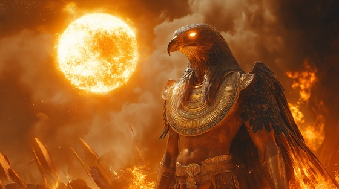

Stand to arms and feel the heat of divine warfare in “Spear of the Sun”, a high-octane thrash metal battle anthem dedicated to Montu, Egypt’s god of war — the falcon-headed champion of the pharaoh and fiery executioner of divine justice.
Who is Montu?
Montu is an ancient Egyptian war god, associated with the sun’s burning wrath and the valor of soldiers. He was the champion of pharaohs, invoked before battle, and worshipped in Thebes as a solar falcon, distinct yet often linked to Ra and Horus.
He is typically depicted as a falcon- or bull-headed man, wearing the sun disk and dual plumes, and wielding weapons of divine retribution. Montu represents disciplined violence in service of Ma’at (order and truth).
Montu: Spear of the Sun
In dawn’s first flame, my shadow rides
The sun behind me, war beside
With falcon eyes and blazing helm
I crush the gates of every realm
The spear I wield is not of men
It burns with Ra’s unbroken yen
Where I descend, the weak must fall
For I am storm, I am the call
No mercy shown, no peace declared
The sun commands, I strike prepared
I am Montu — wrath of day
The spear of gods, the warbird’s sway
Through fire and sand, my glory bleeds
In conquest born, in valor feeds
The battle roars, the pharaoh stands
When I ignite the desert lands
With lion’s heart and falcon’s scream
I break the foes who curse the dream
The sun itself is my command
I ride with flame through every land
My banner flies where courage dies
Yet in my name, the weak arise
For I am law, and I am might
The vanguard god of sacred fight
No mercy shown, no peace declared
The sun commands, I strike prepared
I am Montu — wrath of day
The spear of gods, the warbird’s sway
Through fire and sand, my glory bleeds
In conquest born, in valor feeds
The battle roars, the pharaoh stands
When I ignite the desert lands
I crowned the kings in blood and flame
I carved their right, I forged their name
When enemies draw sword or breath
I answer with the sun’s own death
I fight not blind, I fight for fate
To guard the gates of Egypt’s state
The war I bring is not of pride
But justice set in fire wide
No mercy shown, no peace declared
The sun commands, I strike prepared
I am Montu — wrath of day
The spear of gods, the warbird’s sway
Through fire and sand, my glory bleeds
In conquest born, in valor feeds
The battle roars, the pharaoh stands
When I ignite the desert lands
Let drums be war, let steel be flame
The gods shall speak through my domain
The solar cry, the lion’s breath
I am the god who marches death
So raise the blade and face the sky
For Montu watches when you die
In every clash, in every sun
The war of gods is never done